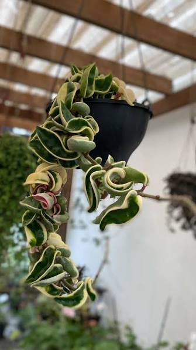
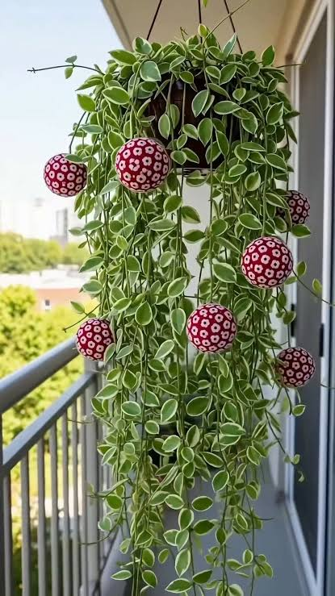

Nossa História - Flores do Campo
Desde 2008, a Flores do Campo transforma sentimentos em gestos especiais por meio da beleza e delicadeza das flores. Fundada por Letícia, nossa floricultura nasceu de uma paixão cultivada em família, com o propósito de aproximar pessoas, eternizar momentos e levar um pouco mais de cor, carinho e natureza para a vida de cada cliente.
Acreditamos que as flores possuem uma linguagem própria, capaz de expressar sentimentos que muitas vezes as palavras não conseguem transmitir. Por isso, cada criação é preparada com dedicação, sensibilidade e atenção aos mínimos detalhes, tornando cada presente uma experiência verdadeiramente especial.
Nosso maior diferencial está na personalização de cada pedido. Oferecemos uma ampla variedade de flores, buquês, cestas românticas e arranjos exclusivos, desenvolvidos de acordo com o gosto, a necessidade e a ocasião de cada cliente. Seja para celebrar um casamento, aniversário, formatura, surpreender alguém querido ou prestar uma homenagem respeitosa, buscamos traduzir cada sentimento em uma composição única.
Mais do que oferecer flores, assumimos o compromisso de proporcionar qualidade, confiança e praticidade. Trabalhamos com cuidado na seleção de nossos produtos, priorizando o frescor, a beleza e a harmonia de cada arranjo. Nossa dedicação também se estende ao atendimento e à agilidade nas entregas, garantindo que cada pedido chegue ao seu destino com todo o cuidado que merece.
Ao longo de nossa trajetória, construímos uma história marcada pelo amor ao que fazemos e pela satisfação de participar de momentos importantes na vida de tantas pessoas. Cada cliente, cada celebração e cada sorriso fazem parte da essência que mantém viva a nossa paixão pela arte floral.
Seja para presentear, demonstrar afeto, decorar um ambiente ou tornar uma ocasião ainda mais memorável, a Flores do Campo está aqui para transformar suas ideias em beleza natural.
Flores do Campo — Cultivando sentimentos, florescendo momentos desde 2008.
